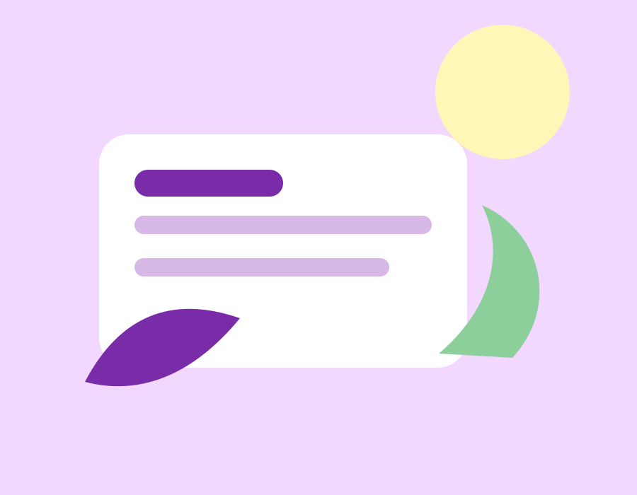

Inspiracion visual
Una galeria con composiciones sencillas para practicar el uso de imagenes y el modelo de caja.
Diseno, color y orden
Este proyecto muestra una pagina accesible, con navegacion clara, imagenes cuidadas y estilos usando flex, grid, hover y nth-child.

Una galeria con composiciones sencillas para practicar el uso de imagenes y el modelo de caja.
Consejos rapidos para revisar contraste, estructura HTML y accesibilidad antes de entregar.
Colores suaves, bordes redondeados y pequenas transiciones para que el sitio se sienta completo.